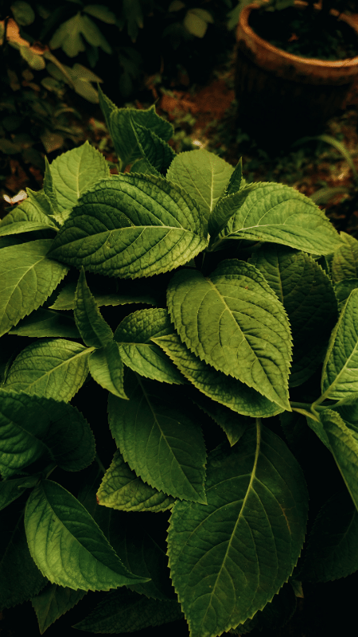

CURIOSIDADES E INFORMAÇÕES
As Plantas Alimentícias Não Convencionais (PANCS) são um grupo de plantas com características únicas: crescem espontaneamente em diversos tipos de solo, sendo assim consideradas rústicas. Elas possuem alto valor nutritivo, potencial de mercado e podem contribuir para a segurança alimentar. Além disso, muitos desses vegetais poderiam ser incorporados à nossa alimentação diária, valorizando seu uso por meio do conhecimento tradicional.
- Azedinha
- Beldroega
- Bertalha
- Coração de bananeira
- Dente-de-leão
- Folhas da batata-doce
- Ora-pro-nobis
- Peixinho
- Serralha
- Taioba
As hortaliças e legumes convencionais, como a couve, a cenoura e a batata, possuem cuidados muito semelhantes em relação ao seu cultivo. Essas espécies gostam de solos férteis, com irrigação periódica e luz solar abundante.
Já a imensa maioria das PANCs requerem necessidades diferentes, podendo ocupar espaços onde há pouca insolação, cujo solo não seja tão fértil, ou úmido ou seco demais para as culturas convencionais.